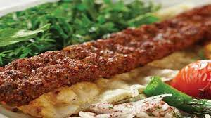

Kısır

Kebabs of all kinds are common in Turkish and Middle Eastern cuisines. This particular version is named after the city of Adana in Turkey,
where it is said to have originated, and is traditionally made of minced lamb mounted on a skewer and grilled over charcoal.
Different cities and regions debate over how spicy the Adana kebab should be, but the inclusion of ground lamb as the choice of meat is a
constant. This recipe seasons the lamb with onion, garlic, cumin, sumac, and red pepper flakes. The cooked kebabs are often served over warm
flatbread to catch the drippings and are accompanied by roasted tomatoes, green or red peppers, sliced onions, and parsley. Less traditional,
but equally delicious, would be to serve them over a bed of cooked basmati rice or an herbed couscous.
Ingredients
- 1 lb ground lamb
- 1 lb ground beef meat
- 4 teaspoons olive oil, for brushing on pita's
- 4 teaspoons salted butter, small cubes
- 1 red bell pepper, minced
- 1 medium yellow onion, minced
- 3 garlic cloves, minced
- 1 teaspoon of sumac
- 1 teaspoon of lemon juice
How to Make Adana Kebap Recipe
- In a large mixing bowl add lamb and veal.
- Then add minced bell peppers and onions to the bowl.
- Add all the spices and mix well.
- Cover and put in fridge(or somewhere cool) for overnight. (Or wait for few hours)
- Mix lemon juice, sumac and red onion in small bowl cover and put in the fridge.
- Using your hands shape mixture into long and flat Adana Kebab shape.
- Place on a hot grill and cook until it gets darker red and then brown.
- Kebabs will be done when they feel spongy or dry and like a brown colour.
- When it is done place the kebab inside of a pita bread if you want to make a durum (wrapped) Kebab.
- Top with yogurt sauce and sliced red onion mixture or place it next to kebab in plate.
- This can also be served with a side of rice.
HOME